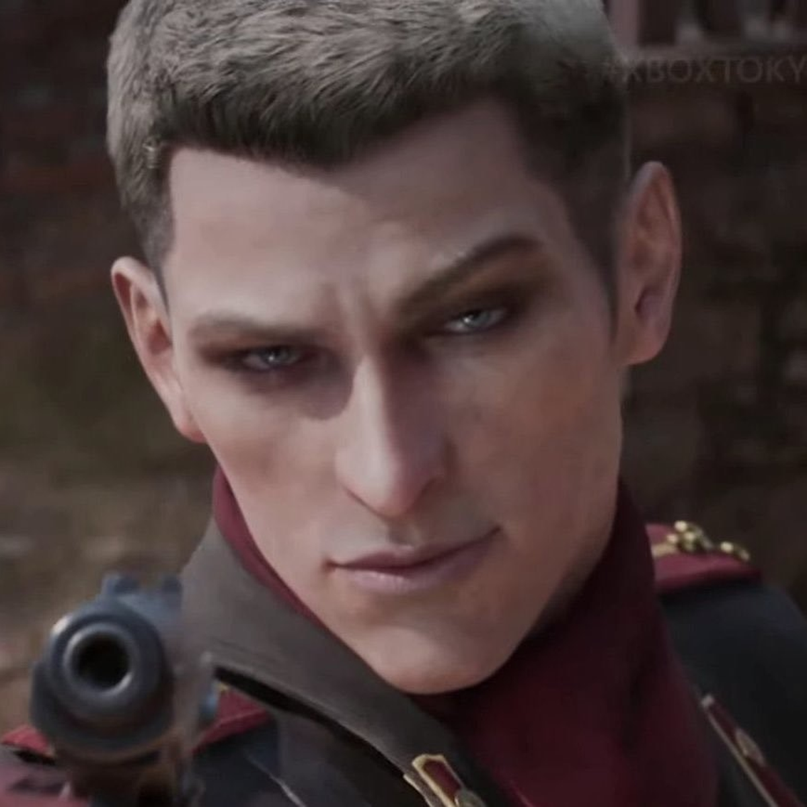

Revolver Ocelot
Revolver Ocelot, cuyo nombre real es Adamska, es un personaje recurrente en la serie Metal Gear. Es un hábil tirador y maestro de la manipulación, conocido por su lealtad cambiante y su papel como agente doble. A lo largo de la serie, Ocelot desempeña diversos roles, desde antagonista hasta aliado, siempre con sus propios objetivos en mente.
Ocelot es famoso por su destreza con las armas de fuego, especialmente con sus revólveres, y su habilidad para el combate cuerpo a cuerpo. Su personalidad carismática y su ingenio lo convierten en un personaje memorable dentro del universo de Metal Gear. A lo largo de los juegos, Ocelot se ve envuelto en intrigas políticas y conspiraciones, lo que añade profundidad a su carácter y motiva sus acciones.
Para más información sobre Metal Gear, visita la página principal.